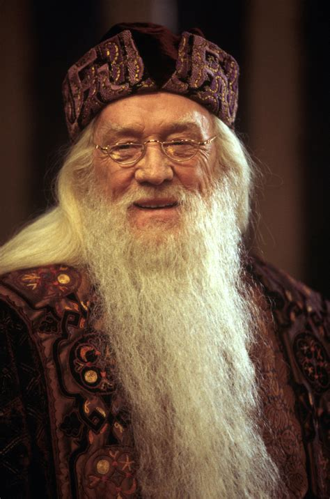

Subscribers:
- Harry Potter
- R. Wisley
-  Dumbledore
.jpg) Tom Reddle
Tom Reddle- Hermione
Tom ReddleI was born on July 31, 1965.
Before I have started witing books about Harry Potter and Fantastic Beasts I was depressing person and I have moments in my life when I wanted to suicide.
My first book about Harry Potter's saga named "Harry Potter and Philosopher's Stone" was published in 1995. And in 1997 the publishing house Bloomsbury agreed to print copies of my book all over the world.
I became famous because of the desire to create something new that is still unknown to the world.
In my book I have instilled a piece of my soul so that anyone can experience such feelings as mine